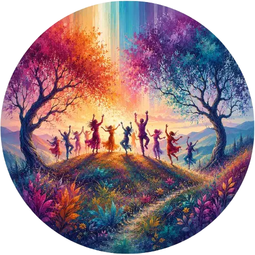

Locatie
Watervloedstraat 20
3012 Wilsele
Evenement
Alle praktische informatie voor deze dansreis: programma, tickets, en hoe je er raakt.

Watervloedstraat 20
3012 Wilsele
Zondag 23/08/2026
14u – 17u of later
€10
(betaling ter plaatse) (cash of payconiq)
Tijd om te landen en de plaats te verkennen voor we samen beginnen.
Landen, en verbinden — met jezelf, met de anderen, en met de ruimte.
Een muzikale reis van rustig naar energetisch en ecstatisch, en weer terug — spelend met emoties en stijlen. Geen gebabbel, drugs of alcohol, en bij voorkeur blootvoets.
Zacht landen, en de ervaring samen in stilte afsluiten.
Voor wie wil, gratis hapjes en drankjes, en tijd om elkaar te ontmoeten.
Inschrijven is niet verplicht maar wordt ten zeerste geapprecieerd. Reserveer je tickets via ellen@ellenjansen.be.
In geval van slecht weer verhuizen we naar binnen. De plaatsen zijn dan beperkt en enkel de eerste 20 inschrijvingen kunnen deelnemen. Mensen die vooraf inschreven worden per e-mail tijdig verwittigd of ze kunnen deelnemen of niet.
Je auto parkeren kan vlakbij gratis in Wilsele in de Ferdinand Perdieusstraat (onder de brug of naast de begraafplaats) en de Alfons van Geelstraat of in de omliggende straten. Wandel vervolgens 400m naar de Watervloedstraat 20 en neem naast de zitbank en boekentil de trap omhoog naar de heuveltuin tussen de bomen.
Je fiets parkeren kan naast de boekentil aan de Watervloedstraat 20. Neem de trap omhoog naar de heuveltuin.
Ook met trein en bus raak je er makkelijk. Het dichtsbijzijnde treinstation is Herent. Wandel vervolgens 1 km over de fietsautostrade F3 tot aan de Zavelputstraat. Van daar wandel je richting de Watervloedstraat 20. en neem je de trap omhoog naar de heuveltuin. Leuven station is ook niet ver en je kan van daaruit de bus nemen, lijn 4 richting Wijgmaal (halte Wilsele Tunnelweg) stopt vlakbij (600m), maar er zijn ook andere opties.